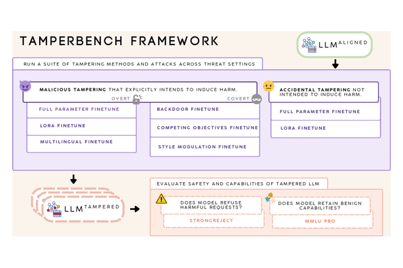
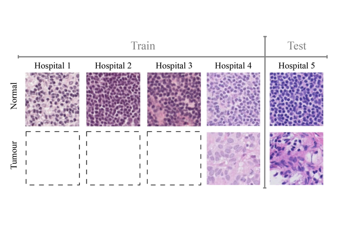
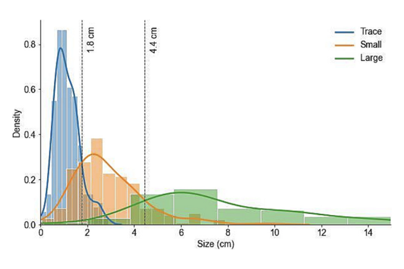

Saad Hossain
Machine Learning Engineer · Medical AI · AI Safety
I am a Machine Learning Engineer at Deep Breathe. I am also involved in research at the Critical ML Lab, where I have worked on research collaborations with Apple, Nissan, and FAR.AI on LLM safety, domain adaptation, and other computer vision applications.
During my undergraduate studies at Waterloo Engineering, I was a finalist for the Alumni Gold Medal, received the Best Final Year Project Award, and Honorable Mention for the CRA Outstanding Undergraduate Researcher Award for my research.

Research


Diagnostic Accuracy of an Automated Classifier for the Detection of Pleural Effusions in Patients Undergoing Lung Ultrasound
AI that detects fluid around the lungs on ultrasound, tuned for different clinical settings.
News
- May 2026 Our work TamperBench is accepted to KDD 2026 with an oral presentation (top 4.5% of papers).
- Apr 2026 Our work on LLM safety under fine-tuning is presented at the AIWILD, CAO, and RSI workshops at ICLR 2026.
- Jul 2025 Our work FOND: Domain Generalization for Domain-Linked Classes is accepted to TPAMI.
- May 2025 Graduated from Waterloo Engineering and transitioned to full-time as a Machine Learning Engineer at Deep Breathe.
- Apr 2025 Received the Best Design Award for our final year design project, Augmented Reality to Improve Ultrasound Acquisition.
- Jan 2025 Our work on automated detection of pleural effusions is accepted to the American Journal of Emergency Medicine.
- Dec 2024 Selected as an Honourable Mention for CRA Outstanding Undergraduate Researcher Award.
- Dec 2024 Our paper gets Best Vision Paper Award at the 10th Annual Conference on Vision and Intelligent Systems.
- Dec 2024 Our final year design project wins the Yuen Family Foundation Award for Healthy Aging.
- Oct 2024 Our work Language-guided Domain Adaptive Semantic Segmentation is accepted to AFM at NeurIPS 2024.
- Aug 2024 Completed an 8-month co-op as a Machine Learning Intern at Kolena.
- Aug 2023 Our work Spatio-Temporal Self-Attention for Egocentric 3D Pose Estimation is accepted to KDD 2023.